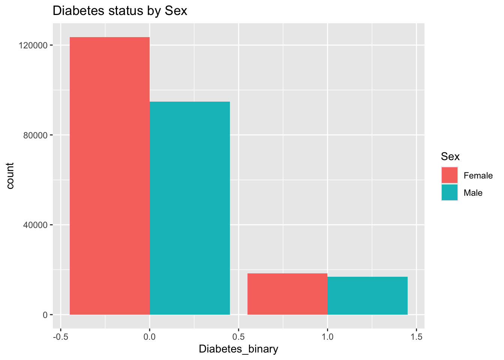
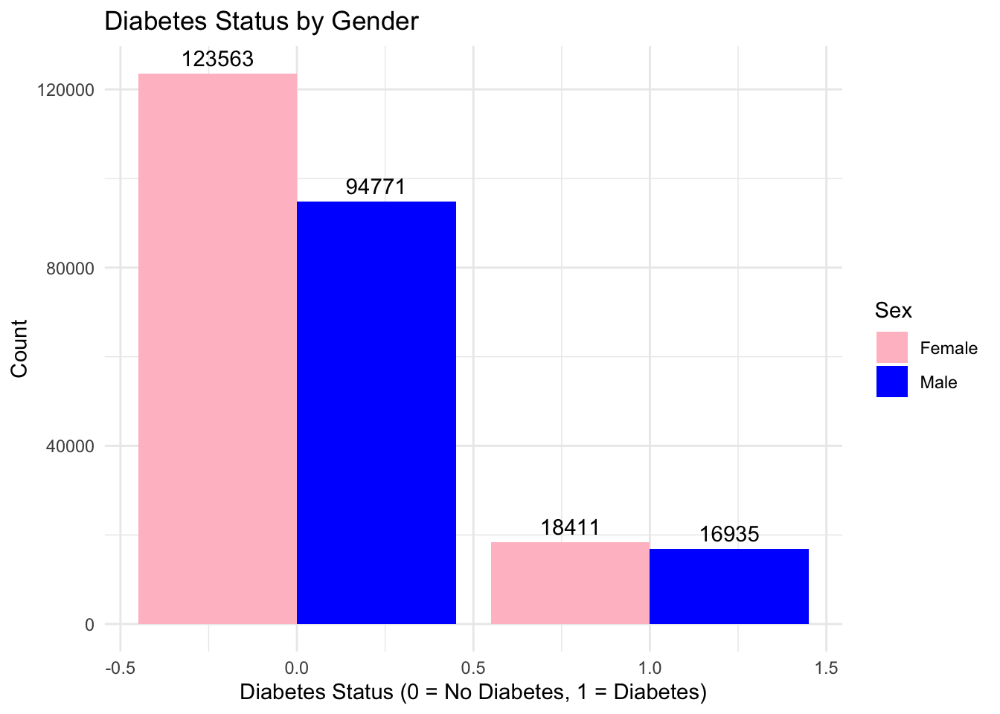
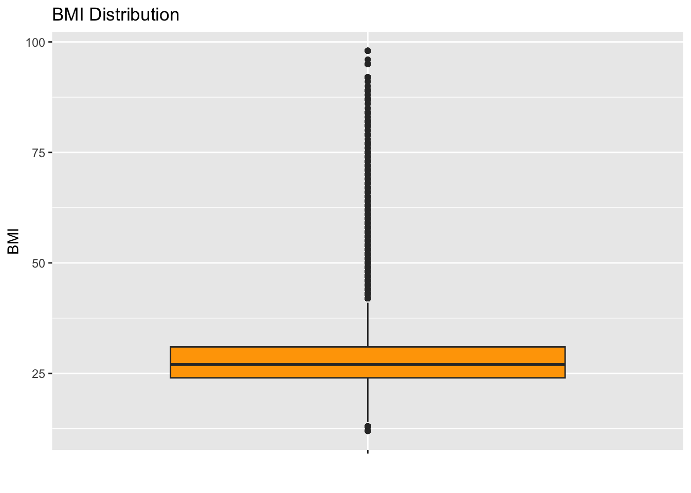
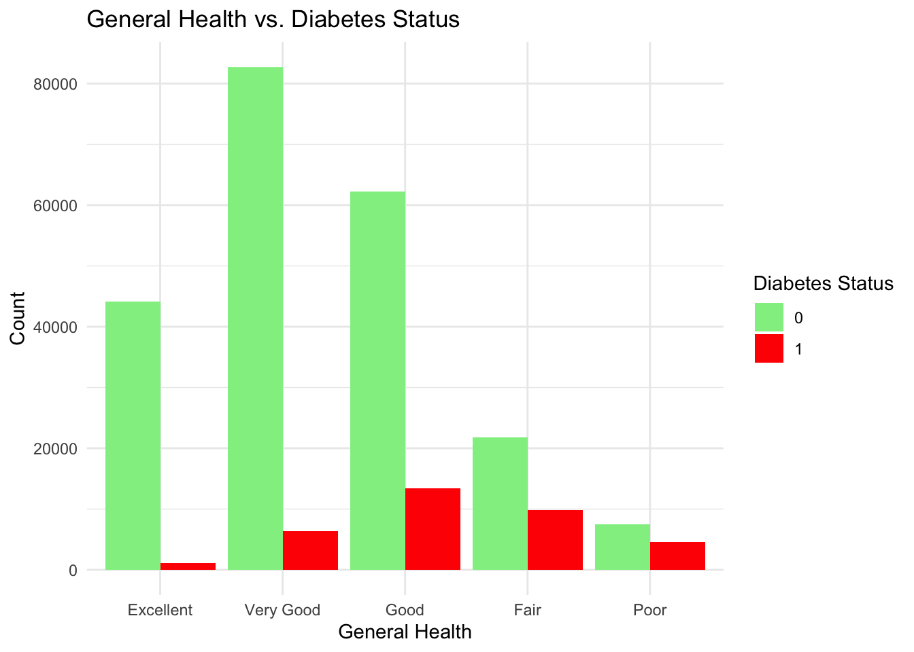
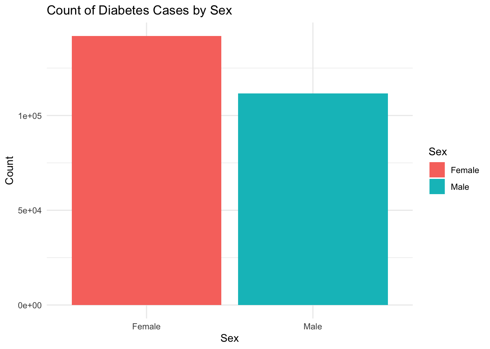

1 + 1[1] 2Quarto enables you to weave together content and executable code into a finished document. To learn more about Quarto see https://quarto.org.
When you click the Render button a document will be generated that includes both content and the output of embedded code. You can embed code like this:
1 + 1[1] 2You can add options to executable code like this
[1] 4The echo: false option disables the printing of code (only output is displayed).
The data set is for Diabetes Health Indicators, which contains health-related indicators collected from individuals. Our main goal is to predict the response variable Diabetes_binary, which indicated the presence(1) or absence(0) of diabetes. There are total 23 variables. Most variables are categorical, and some are encoded as integers or binary indicators. These variables will be converted into factors with meaningful level names.
This is a classification problem because we have to find whether the patient has diabetes or not.
Main goal is to predict whether a person has diabetes based on health indicators.
Import the libraries
library(tidyverse)── Attaching core tidyverse packages ──────────────────────── tidyverse 2.0.0 ──
✔ dplyr 1.1.4 ✔ readr 2.1.5
✔ forcats 1.0.0 ✔ stringr 1.5.1
✔ ggplot2 3.5.1 ✔ tibble 3.2.1
✔ lubridate 1.9.3 ✔ tidyr 1.3.1
✔ purrr 1.0.2
── Conflicts ────────────────────────────────────────── tidyverse_conflicts() ──
✖ dplyr::filter() masks stats::filter()
✖ dplyr::lag() masks stats::lag()
ℹ Use the conflicted package (<http://conflicted.r-lib.org/>) to force all conflicts to become errorslibrary(ggplot2)
library(tidymodels)── Attaching packages ────────────────────────────────────── tidymodels 1.2.0 ──
✔ broom 1.0.6 ✔ rsample 1.2.1
✔ dials 1.3.0 ✔ tune 1.2.1
✔ infer 1.0.7 ✔ workflows 1.1.4
✔ modeldata 1.4.0 ✔ workflowsets 1.1.0
✔ parsnip 1.2.1 ✔ yardstick 1.3.1
✔ recipes 1.1.0
── Conflicts ───────────────────────────────────────── tidymodels_conflicts() ──
✖ scales::discard() masks purrr::discard()
✖ dplyr::filter() masks stats::filter()
✖ recipes::fixed() masks stringr::fixed()
✖ dplyr::lag() masks stats::lag()
✖ yardstick::spec() masks readr::spec()
✖ recipes::step() masks stats::step()
• Dig deeper into tidy modeling with R at https://www.tmwr.orglibrary(rpart.plot)Loading required package: rpart
Attaching package: 'rpart'
The following object is masked from 'package:dials':
prunehealth_data <- read_csv("diabetes_binary_health_indicators_BRFSS2015.csv")Rows: 253680 Columns: 22
── Column specification ────────────────────────────────────────────────────────
Delimiter: ","
dbl (22): Diabetes_binary, HighBP, HighChol, CholCheck, BMI, Smoker, Stroke,...
ℹ Use `spec()` to retrieve the full column specification for this data.
ℹ Specify the column types or set `show_col_types = FALSE` to quiet this message.head(health_data)# A tibble: 6 × 22
Diabetes_binary HighBP HighChol CholCheck BMI Smoker Stroke
<dbl> <dbl> <dbl> <dbl> <dbl> <dbl> <dbl>
1 0 1 1 1 40 1 0
2 0 0 0 0 25 1 0
3 0 1 1 1 28 0 0
4 0 1 0 1 27 0 0
5 0 1 1 1 24 0 0
6 0 1 1 1 25 1 0
# ℹ 15 more variables: HeartDiseaseorAttack <dbl>, PhysActivity <dbl>,
# Fruits <dbl>, Veggies <dbl>, HvyAlcoholConsump <dbl>, AnyHealthcare <dbl>,
# NoDocbcCost <dbl>, GenHlth <dbl>, MentHlth <dbl>, PhysHlth <dbl>,
# DiffWalk <dbl>, Sex <dbl>, Age <dbl>, Education <dbl>, Income <dbl>Understand the distribution and relationship between variables
Identify factors that influence diabetes status
Prepare the dataset for modeling by identifying necessary transformations or imputations
Checking the Data
health_data |>
is.na() |>
colSums() Diabetes_binary HighBP HighChol
0 0 0
CholCheck BMI Smoker
0 0 0
Stroke HeartDiseaseorAttack PhysActivity
0 0 0
Fruits Veggies HvyAlcoholConsump
0 0 0
AnyHealthcare NoDocbcCost GenHlth
0 0 0
MentHlth PhysHlth DiffWalk
0 0 0
Sex Age Education
0 0 0
Income
0 No missing values. Check the column type and values
attributes(health_data)$speccols(
Diabetes_binary = col_double(),
HighBP = col_double(),
HighChol = col_double(),
CholCheck = col_double(),
BMI = col_double(),
Smoker = col_double(),
Stroke = col_double(),
HeartDiseaseorAttack = col_double(),
PhysActivity = col_double(),
Fruits = col_double(),
Veggies = col_double(),
HvyAlcoholConsump = col_double(),
AnyHealthcare = col_double(),
NoDocbcCost = col_double(),
GenHlth = col_double(),
MentHlth = col_double(),
PhysHlth = col_double(),
DiffWalk = col_double(),
Sex = col_double(),
Age = col_double(),
Education = col_double(),
Income = col_double()
)All columns seems reasonable.
briefly summarize each column to see if there is any weird values
summary(health_data) Diabetes_binary HighBP HighChol CholCheck
Min. :0.0000 Min. :0.000 Min. :0.0000 Min. :0.0000
1st Qu.:0.0000 1st Qu.:0.000 1st Qu.:0.0000 1st Qu.:1.0000
Median :0.0000 Median :0.000 Median :0.0000 Median :1.0000
Mean :0.1393 Mean :0.429 Mean :0.4241 Mean :0.9627
3rd Qu.:0.0000 3rd Qu.:1.000 3rd Qu.:1.0000 3rd Qu.:1.0000
Max. :1.0000 Max. :1.000 Max. :1.0000 Max. :1.0000
BMI Smoker Stroke HeartDiseaseorAttack
Min. :12.00 Min. :0.0000 Min. :0.00000 Min. :0.00000
1st Qu.:24.00 1st Qu.:0.0000 1st Qu.:0.00000 1st Qu.:0.00000
Median :27.00 Median :0.0000 Median :0.00000 Median :0.00000
Mean :28.38 Mean :0.4432 Mean :0.04057 Mean :0.09419
3rd Qu.:31.00 3rd Qu.:1.0000 3rd Qu.:0.00000 3rd Qu.:0.00000
Max. :98.00 Max. :1.0000 Max. :1.00000 Max. :1.00000
PhysActivity Fruits Veggies HvyAlcoholConsump
Min. :0.0000 Min. :0.0000 Min. :0.0000 Min. :0.0000
1st Qu.:1.0000 1st Qu.:0.0000 1st Qu.:1.0000 1st Qu.:0.0000
Median :1.0000 Median :1.0000 Median :1.0000 Median :0.0000
Mean :0.7565 Mean :0.6343 Mean :0.8114 Mean :0.0562
3rd Qu.:1.0000 3rd Qu.:1.0000 3rd Qu.:1.0000 3rd Qu.:0.0000
Max. :1.0000 Max. :1.0000 Max. :1.0000 Max. :1.0000
AnyHealthcare NoDocbcCost GenHlth MentHlth
Min. :0.0000 Min. :0.00000 Min. :1.000 Min. : 0.000
1st Qu.:1.0000 1st Qu.:0.00000 1st Qu.:2.000 1st Qu.: 0.000
Median :1.0000 Median :0.00000 Median :2.000 Median : 0.000
Mean :0.9511 Mean :0.08418 Mean :2.511 Mean : 3.185
3rd Qu.:1.0000 3rd Qu.:0.00000 3rd Qu.:3.000 3rd Qu.: 2.000
Max. :1.0000 Max. :1.00000 Max. :5.000 Max. :30.000
PhysHlth DiffWalk Sex Age
Min. : 0.000 Min. :0.0000 Min. :0.0000 Min. : 1.000
1st Qu.: 0.000 1st Qu.:0.0000 1st Qu.:0.0000 1st Qu.: 6.000
Median : 0.000 Median :0.0000 Median :0.0000 Median : 8.000
Mean : 4.242 Mean :0.1682 Mean :0.4403 Mean : 8.032
3rd Qu.: 3.000 3rd Qu.:0.0000 3rd Qu.:1.0000 3rd Qu.:10.000
Max. :30.000 Max. :1.0000 Max. :1.0000 Max. :13.000
Education Income
Min. :1.00 Min. :1.000
1st Qu.:4.00 1st Qu.:5.000
Median :5.00 Median :7.000
Mean :5.05 Mean :6.054
3rd Qu.:6.00 3rd Qu.:8.000
Max. :6.00 Max. :8.000 In the health data it looks like except BMI all the columns are categorical data so we have to convert all the columns into factor
health_data <- health_data |>
mutate(HighBP = factor(HighBP, levels = c(0,1), labels = c("No", "Yes")),
HighChol = factor(HighChol, levels = c(0,1), labels = c("No", "Yes")),
CholCheck = factor(CholCheck, levels = c(0,1), labels = c("No", "Yes")),
Smoker = factor(Smoker, levels = c(0,1), labels = c("No", "Yes")),
Stroke = factor(Stroke, levels = c(0,1), labels = c("No", "Yes")),
HeartDiseaseorAttack = factor(HeartDiseaseorAttack, levels = c(0,1), labels = c("No","Yes")),
PhysActivity = factor(PhysActivity, levels = c(0,1), labels = c("No", "Yes")),
Fruits = factor(Fruits, levels = c(0,1), labels = c("No", "Yes")),
Veggies = factor(Veggies, levels = c(0,1), labels = c("No", "Yes")),
HvyAlcoholConsump = factor(HvyAlcoholConsump, levels = c(0, 1), labels = c("No", "Yes")),
AnyHealthcare = factor(AnyHealthcare, levels = c(0,1), labels = c("No", "Yes")),
NoDocbcCost = factor(NoDocbcCost, levels = c(0,1), labels = c("No", "Yes")),
GenHlth = factor(GenHlth, levels = c(1:5), labels = c("Excellent", "Very Good", "Good", "Fair", "Poor")),
DiffWalk = factor(DiffWalk, levels = c(0,1), labels = c("No", "Yes")),
Sex = factor(Sex, levels = c(0,1), labels = c("Female", "Male")),
Age = factor(Age, levels = c(1:13), labels = c("18-24", "25-29", "30-34", "35-39", "40-44", "45-49", "50-54", "55-59", "60-64", "65-69", "70-74", "75-79", "80+")),
Education = factor(Education, levels = c(1:6), labels = c("KG or No School", "Elementary", "Middle school", "High school", "College","Professional Degree")),
Income = factor(Income, levels = c(1:8), labels = c("<10K", "$10k-$15k", "$15k-$20k", "$20k-$25k", "$25k-$35k", "$35k-$50k", "$50k-$75k", "$75k+"))
)
health_data# A tibble: 253,680 × 22
Diabetes_binary HighBP HighChol CholCheck BMI Smoker Stroke
<dbl> <fct> <fct> <fct> <dbl> <fct> <fct>
1 0 Yes Yes Yes 40 Yes No
2 0 No No No 25 Yes No
3 0 Yes Yes Yes 28 No No
4 0 Yes No Yes 27 No No
5 0 Yes Yes Yes 24 No No
6 0 Yes Yes Yes 25 Yes No
7 0 Yes No Yes 30 Yes No
8 0 Yes Yes Yes 25 Yes No
9 1 Yes Yes Yes 30 Yes No
10 0 No No Yes 24 No No
# ℹ 253,670 more rows
# ℹ 15 more variables: HeartDiseaseorAttack <fct>, PhysActivity <fct>,
# Fruits <fct>, Veggies <fct>, HvyAlcoholConsump <fct>, AnyHealthcare <fct>,
# NoDocbcCost <fct>, GenHlth <fct>, MentHlth <dbl>, PhysHlth <dbl>,
# DiffWalk <fct>, Sex <fct>, Age <fct>, Education <fct>, Income <fct># Check unique values for categorical variables
#sapply(health_data, function(x) if (is.factor(x)) levels(x) else NULL)
factor_col <- health_data |>
select(where(is.factor))
lapply(factor_col, levels)$HighBP
[1] "No" "Yes"
$HighChol
[1] "No" "Yes"
$CholCheck
[1] "No" "Yes"
$Smoker
[1] "No" "Yes"
$Stroke
[1] "No" "Yes"
$HeartDiseaseorAttack
[1] "No" "Yes"
$PhysActivity
[1] "No" "Yes"
$Fruits
[1] "No" "Yes"
$Veggies
[1] "No" "Yes"
$HvyAlcoholConsump
[1] "No" "Yes"
$AnyHealthcare
[1] "No" "Yes"
$NoDocbcCost
[1] "No" "Yes"
$GenHlth
[1] "Excellent" "Very Good" "Good" "Fair" "Poor"
$DiffWalk
[1] "No" "Yes"
$Sex
[1] "Female" "Male"
$Age
[1] "18-24" "25-29" "30-34" "35-39" "40-44" "45-49" "50-54" "55-59" "60-64"
[10] "65-69" "70-74" "75-79" "80+"
$Education
[1] "KG or No School" "Elementary" "Middle school"
[4] "High school" "College" "Professional Degree"
$Income
[1] "<10K" "$10k-$15k" "$15k-$20k" "$20k-$25k" "$25k-$35k" "$35k-$50k"
[7] "$50k-$75k" "$75k+" # freq_table <- sapply(health_data, function(x) if(is.factor(x)) table(x) else NULL)
# freq_table
factor_cont_table <- lapply(factor_col, table)
factor_cont_table$HighBP
No Yes
144851 108829
$HighChol
No Yes
146089 107591
$CholCheck
No Yes
9470 244210
$Smoker
No Yes
141257 112423
$Stroke
No Yes
243388 10292
$HeartDiseaseorAttack
No Yes
229787 23893
$PhysActivity
No Yes
61760 191920
$Fruits
No Yes
92782 160898
$Veggies
No Yes
47839 205841
$HvyAlcoholConsump
No Yes
239424 14256
$AnyHealthcare
No Yes
12417 241263
$NoDocbcCost
No Yes
232326 21354
$GenHlth
Excellent Very Good Good Fair Poor
45299 89084 75646 31570 12081
$DiffWalk
No Yes
211005 42675
$Sex
Female Male
141974 111706
$Age
18-24 25-29 30-34 35-39 40-44 45-49 50-54 55-59 60-64 65-69 70-74 75-79 80+
5700 7598 11123 13823 16157 19819 26314 30832 33244 32194 23533 15980 17363
$Education
KG or No School Elementary Middle school High school
174 4043 9478 62750
College Professional Degree
69910 107325
$Income
<10K $10k-$15k $15k-$20k $20k-$25k $25k-$35k $35k-$50k $50k-$75k $75k+
9811 11783 15994 20135 25883 36470 43219 90385 unique(health_data$Diabetes_binary)[1] 0 1ggplot(health_data, aes(x= Diabetes_binary, fill = Sex)) +
geom_bar(position = "dodge") +
labs(title = "Diabetes status by Sex")
cont_table <- table(health_data$Diabetes_binary, health_data$Sex)
cont_table
Female Male
0 123563 94771
1 18411 16935diab_count <- health_data |>
group_by(Diabetes_binary) |>
summarize(count = n())
diab_count# A tibble: 2 × 2
Diabetes_binary count
<dbl> <int>
1 0 218334
2 1 35346We can see that the response data is not balanced. Here is number of patient who have diabetes are less incomparison of number of patient who have diabetes.
Find the diabetes Prevalence by Gender
ggplot(health_data, aes(x = Diabetes_binary, fill = Sex)) +
geom_bar(position = "dodge") +
geom_text(
stat = "count",
aes(label = ..count..),
position = position_dodge(width = 0.9),
vjust = -0.5
) +
labs(
title = "Diabetes Status by Gender",
x = "Diabetes Status (0 = No Diabetes, 1 = Diabetes)",
y = "Count"
) +
scale_fill_manual(values = c("Female" = "pink", "Male" = "blue")) +
theme_minimal()Warning: The dot-dot notation (`..count..`) was deprecated in ggplot2 3.4.0.
ℹ Please use `after_stat(count)` instead.
It is showing that number of females have more diabetes in comparison of male count
Just checking is there any outlier in BMI column
ggplot(health_data, aes(x = "", y = BMI)) +
geom_boxplot(fill = "orange") +
labs(title = "BMI Distribution", x = "", y= "BMI")
ggplot(health_data, aes(x = GenHlth, fill = factor(Diabetes_binary))) +
geom_bar(position = "dodge") +
labs(title = "General Health vs. Diabetes Status", x = "General Health", y = "Count") +
scale_fill_manual(values = c("0" = "lightgreen", "1" = "red"), name = "Diabetes Status") +
theme_minimal()
# Summarize the counts for Diabetes_binary by Sex
diab_count <- health_data %>%
group_by(Sex) %>%
summarize(count = n())
# Plot using the aggregated data
ggplot(diab_count, aes(x = Sex, y = count, fill = Sex)) +
geom_bar(stat = "identity", position = "dodge") +
labs(
title = "Count of Diabetes Cases by Sex",
x = "Sex",
y = "Count"
) +
theme_minimal()
# do some correlation on the numerical data
health_data |>
select(where(is.numeric)) |>
cor() |>
round(3) Diabetes_binary BMI MentHlth PhysHlth
Diabetes_binary 1.000 0.217 0.069 0.171
BMI 0.217 1.000 0.085 0.121
MentHlth 0.069 0.085 1.000 0.354
PhysHlth 0.171 0.121 0.354 1.000